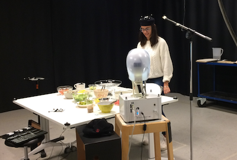

From social robots to smart speakers
Embodied Conversational AI
 Conversational agents and social robots are becoming increasingly popular in the last decade. In order for these units to make their way into our everyday life, they have to function at a social level similar to humans. Interactions between humans are complex and include many subtle cues that we take for granted. When developing a robotic partner, these things have to be integrated into the system in order for us to perceive these agents as sociable, intelligent partners.
This project resulting from the course Human Perception of the Master’s Interactive Media Technology at KTH investigates the effect of the physical embodiment of the agent and how differently embodied agents are perceived by human users in terms of social presence. Two different conversational agents have been used for the study: Amazon Echo (left picture) and Furhat robot (right picture). Furhat has been configured in two modes at the same time: a heuristic eye-gaze mode where the robot would move his eyes and his head to follow the user's movements, and a static mode where the robot would stay static throughout the development of the task.
In order for us to study the physical embodiment effect, subjects (N=30) have been given the task of cooking different recipes with the help of the different agents. They have been encouraged to interact with the robot/speaker while following their instructions.
After each task, each subject filled out a social presence questionnaire from where the results have been evaluated. The results from the questionnaire show significant difference between Amazon Echo and Furhat in terms of social presence. The conclusion is that physical embodiment does have an impact on the perceived social presence, but at some level of embodiment the difference becomes smaller as Furhat with gaze shift showed no significance difference with the static one. Our findings indicate that it is not always favorable for agents to be anthropomorphised or to communicate with non-verbal cues. We found a trade-off between task performance and perceived sociability when controlling for anthropomorphism and social behavior.
A research paper "The Effects of Anthropomorphism and Non-verbal Social Behaviour in Virtual Assistants" has been written out of this project. This paper has been also presented at the 19th ACM International Conference on Intelligent Virtual Agents in Paris.
Project members: Dimosthenis Kontogiorgos, Olle Andersson, Marco Koivisto, Ville Vartiainen, and Elena González Rabal.